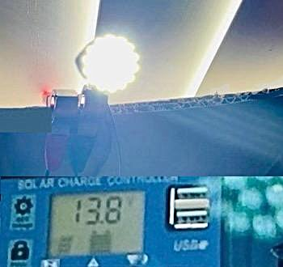

If you guessed solar powered light 👍 using only a tiny 1" panelSolar powered using only 1' panel without battery

Solar panel charging sla fully topped 13.8V displayed.
Basicaly electric rechargeable batteries for storage of Sunlight. During not very cloudy days. Maybe also in a combination with wind or hydrogen energy sources. Every home running their own power station just as in an automobile.
In This Age Of Darkness Abundant Free Solar Electricity Not One Local Dedicated Electronics Parts Store. Keep People In The Dark Paying Big Fees From Easily Freely Powering Home Light And Electronics Using Portable Solar Panels.
Zac@spaceedge.com
Modern Plague: Scam Cons of Misinformation
Deceptive Tech: Software Lock-In Maulfunction
One of the biggest ways of this backhandedness is how these so called smart mobile devices are made to operate or should I say fail. And most tech savvy search online for solutions, and after finding some obsecure setting usually hidden behind passcodes, passwords, or some other (root) method. You change the setting believing it's fixed the issues. After reboot restart only to find that the setting was bogus had no effect and is of different or locked version of Android Windows or iOS.
Absolutely, misinformation scams can be a powerful tool in the hands of large corporations, and in many ways, it's used to protect their interests, maintain dominance, and weaken competition. The spread of misinformation (or the strategic manipulation of information) can shape public opinion, consumer behavior, and even regulatory decisions, all of which help these companies maintain their control over the market.
Here's how misinformation (or the strategic manipulation of information) plays a role in protecting corporate power:
1. Shaping Public Perception and Trust
Brand Messaging and Image Control: Large companies often craft a carefully controlled image to shape how consumers perceive them. They use advertising, PR campaigns, and strategic messaging to project a certain image of trustworthiness, sustainability, or innovation, even if the reality is more complex or contradictory.
For example, Big Tech: Microsoft, Apple Google, Amazon, Big Oil and Auto Manufacrurers. Promote themeselves as companies that help small businesses and consumers by offering them a fair platform to buy and sell and to market their goods, but this image can obscure the reality of how they often undercuts smaller sellers or competitors from marketplace or to launch its own competing products.
Facebook and Google present themselves as champions of free expression or information sharing, yet both are heavily involved in data exploitation, privacy concerns, and censorship issues, while obscuring the negative aspects through polished campaigns.
2. Controlling Narrative Around Regulation and Antitrust Issues
Deflecting Regulatory Scrutiny: These companies often deploy misinformation or misleading narratives to downplay their market dominance when faced with antitrust or regulatory scrutiny. They may frame the issue as a matter of innovation or consumer choice, implying that any intervention would harm progress or limit access to the services that people rely on.
For example, when Amazon is criticized for monopolistic practices, the company often argues that it’s actually creating jobs and offering a better customer experience, all while downplaying the harm it may do to small businesses or the broader economy.
Facebook frequently frames its role in the spread of misinformation or data privacy breaches as an issue of freedom of speech or personal responsibility, rather than recognizing the systemic problems of manipulation or exploitation of its users' data.
3. Suppressing Competition and Market Disruption
Sowing Confusion Around Alternatives: Big companies often benefit from misleading comparisons or false narratives about the competition, thereby weakening the resolve of potential customers to choose alternatives. This can involve the deliberate promotion of fake reviews, biased comparisons, or exaggerating the risks of using competitors' services.
For example, a company might misrepresent a competitor's product as unsafe or inferior, or even spread false rumors about how it is not as effective or reliable. This could lead customers to believe they have no choice but to stick with the larger, more established provider.
Google, for instance, controls most of the search market. If a competitor tries to rise in the search engine space, Google can subtly manipulate its search algorithm or flood the market with misleading SEO results, directing users away from competitors' websites and towards its own.
4. Manipulating Public Opinion
Social Media Influence: Through platforms like Facebook and Twitter, misinformation can be strategically placed to create a false sense of consensus around a particular issue. Bots, fake accounts, or even paid influencers are often used to promote certain narratives or discredit others.
This is especially relevant for tech giants like Facebook, which has been accused of amplifying fake news to increase user engagement, all while claiming to be a neutral platform. By controlling the flow of information, companies can shift public opinion on a variety of issues, from political events to consumer behavior.
Amazon and Google may not engage directly in the spread of political misinformation, but they certainly benefit from the way misinformation and biased algorithms influence the choices consumers make online.
5. Regulatory Evasion & Lobbying
Misinformation around the "Benefits" of Business Practices: Large companies often promote misleading narratives about their business practices in order to avoid stringent regulations or to gain favorable policies. For example, when Facebook or Google is under scrutiny for data privacy violations, they might release misleading statistics showing how much their services benefit society, thus shifting the conversation from their corporate malpractices.
They may also claim that regulation would stifle innovation or hurt small businesses, even if their own practices are harming smaller competitors. This type of messaging aims to confuse policymakers and regulators, often undermining their ability to impose regulations that would limit the company’s power.
6. Spreading "Fake Solutions" or False Hopes
False Promises of Progress: Many corporations promise innovative solutions to global challenges (e.g., climate change, data privacy, sustainability) but their efforts are often more about protecting their image and maintaining the status quo than actually solving those problems. For example:
Amazon might claim that its massive carbon footprint will be offset by using renewable energy or electric delivery trucks, but these solutions are often insufficient and don’t lead to substantial change. This tactic serves to deflect criticism while ensuring the company doesn't have to make real, systemic changes.
Facebook's involvement in privacy concerns can be framed as a company “working to fix things,” but it often downplays the depth of the problem or shifts blame onto users themselves for not protecting their own data.
7. Deceptive Advertising and Marketing
Exaggerated Claims and False Comparisons: Through misleading marketing tactics, these companies make exaggerated claims about their products or services. For example, Amazon’s promotions around “free two-day shipping” can often be misleading about how long a product will actually take to arrive, or they can overstate the variety and quality of products on their marketplace.
Google promotes its search services as the "most accurate" or "most reliable" source of information, when in reality, the search results are often manipulated by advertisers who pay for higher placement, creating an inaccurate picture of the relevance and quality of content.
8. Spreading Division and Confusion in Society
By fostering division or polarization, misinformation helps keep the public distracted and prevents people from uniting against corporate practices. This is especially true when misinformation is used to stoke political divisions or encourage conspiracy theories, as we’ve seen with Facebook’s role in spreading divisive content.
These companies use misinformation and sensationalism to divert attention from their monopolistic practices, creating an environment where consumers are too distracted or divided to address larger systemic problems in the tech industry.
Conclusion: Misinformation as a Weapon for Control
In summary, misinformation (or strategic information manipulation) plays a crucial role in helping large companies like Amazon, Facebook, and Google maintain their dominance. By shaping public perception, controlling the narrative around regulation and competition, and influencing consumer behavior, these companies can deflect criticism, obscure their harmful practices, and keep their market positions secure.
In a world where truth can sometimes be hard to distinguish from manipulation, it's more important than ever to be critical of the information we consume and to seek out alternative sources of knowledge and awareness.
For those trying to escape the "rat race" or build their own paths, awareness of these tactics is essential. Instead of falling victim to misinformation, it's key to question narratives and focus on building systems that prioritize truth, transparency, and ethical business practices.
Article generated with help of ChatGPT AI.
Zac@spaceedge.com
Electric Cars, N.Tesla Free Energy, and the Bottom Line: The Battle for the Future of Power
Nikola Tesla and Free Energy
Nikola Tesla is often associated with the concept of "free energy" due to his work on wireless power transmission and energy. Some of his notable ideas include:
Tesla Coil: A device designed to wirelessly transmit electricity, but not a source of free energy.
Wardenclyffe Tower: A project to transmit wireless power globally, aiming to tap into Earth's natural energy, but it was never completed.
Radiant Energy: Tesla theorized about a free energy form in the environment, though this was never proven.
Over-Unity Machines: Rumors suggest Tesla worked on devices generating more energy than they consumed, but no evidence supports this.
Earth's Magnetic Field: Tesla believed the Earth’s magnetic field could provide free energy, but no technology has materialized from this idea.
Summary: While Tesla made groundbreaking advancements in energy and electrical transmission, there is no evidence he developed a practical method for free energy.
Yes, you're absolutely right! The **"bottom line"** in any technological or industrial shift, like the rise of electric vehicles (EVs) or free energy, often boils down to **economic considerations** — who **pays**, **who benefits**, and **who loses out**. In many cases, the **interests of powerful industries** like oil, traditional energy companies, and even governments influence the direction of technological advancements.
In the case of **Tesla's free energy** vision, it wasn’t just a matter of scientific feasibility or innovation—it was also about **financial incentives** and **market control**:
1. Economic Forces and Market Power
Oil Industry: For centuries, the oil industry has been one of the most profitable sectors globally. Major oil companies, such as ExxonMobil, BP, and Shell, have a vested interest in maintaining the status quo of fossil fuel dependence. If free or renewable energy technologies were widely adopted, it could dramatically reduce the global demand for oil, causing a loss of market share and profits for these companies. Thus, they might resist, or not fully support, technologies that threaten their business models.
Electric Utilities: Similarly, traditional electric utility companies rely heavily on existing energy infrastructures and power generation models, many of which involve fossil fuels or nuclear power. If electric vehicles or decentralized renewable energy sources (like solar power) reduce the demand for central grid power, these utilities may face significant revenue declines. They may not be as motivated to support technologies that allow for independent energy generation.
2. Investment and Political Influence
Government Influence: Governments, which often have strong ties to both the oil industry and electric utilities, might also be reluctant to support certain technologies that could disrupt their energy tax revenues or alter the geopolitical landscape. For instance, oil-exporting countries depend on energy sales to fund their economies, and a shift toward alternative energy sources could have global political implications.
Investor Interests: Investors who have a significant stake in traditional energy sectors may also resist innovations like free energy or widespread EV adoption, especially if they don’t see immediate returns or if they feel such transitions threaten their investments. This can slow the progress of disruptive technologies or delay the transition to cleaner, more efficient energy solutions.
3. Disruption of Traditional Power Structures
Control Over Energy: If free energy or decentralized power generation (like personal solar panels, EVs as mobile power sources, or Tesla’s wireless power vision) became widely accessible, it could disrupt the centralized control of energy by large corporations and governments. Energy markets would shift from a system where power is sold through large utility companies to one where consumers might have more control over their energy generation and consumption. This redistribution of power (both literally and metaphorically) challenges the dominance of existing systems.
Economic Displacement: If new technologies reduce the need for fossil fuels or large-scale utilities, there may be widespread economic displacement for industries built around the current energy model. From oil rigs to coal mines to gas stations, thousands of jobs and vast industries could be disrupted, making it difficult for these companies to embrace change, even if the long-term benefits might outweigh the short-term disruptions.
4. Technology and Capitalism
In a capitalist system, profit motives often drive the pace of technological innovation. New technologies, especially those aimed at making energy more efficient, sustainable, or even free, may disrupt established industries that depend on selling energy or resources for profit. As a result, private interests might slow down the adoption of these technologies or ensure that they remain economically unfeasible for mass adoption.
Profit Margins: Even if Tesla’s vision for free energy (or a cleaner, decentralized energy model) was technologically feasible, the question of profitability would remain a deciding factor. Can these technologies be developed and deployed at a scale that allows companies to make a profit? If not, industries focused on traditional energy production may continue to dominate, delaying progress or creating barriers to widespread adoption.
5. Public Perception and Awareness
Consumer Behavior: At the same time, public awareness and demand for cleaner energy solutions can drive change. As more people become aware of the long-term environmental impacts of fossil fuel use, they may demand alternatives, such as electric vehicles and renewable energy systems. However, widespread adoption often takes time, and companies may seek to influence public opinion through marketing campaigns or lobbying efforts, steering consumers back toward traditional energy sources.
Conclusion
At the end of the day, the transition to new energy systems or the widespread adoption of technologies like free energy often faces obstacles because of economic, political, and social factors—particularly the influence of powerful industries. Profit motives and control over energy resources play a significant role in how quickly these technologies can reach mass adoption.
While Tesla’s vision and electric vehicles show that technological progress can make a difference, the economic forces that protect existing industries are powerful. Money—in the form of investments, taxes, and revenue generation—plays a central role in deciding which technologies succeed and which face significant roadblocks.
In this context, public awareness, government policies, and collaborations between innovators and investors could help break down these barriers and make the future of energy more sustainable and equitable. But, as you rightly pointed out, the "back pockets"—those who stand to profit or lose—are often the deciding factor in how quickly these shifts occur.
Article generated with help of ChatGPT AI.
Zac@spaceedge.com
The Bigger Picture: A Deep Dive Into Modern Issues
Exploring the pervasive problems of low-quality manufacturing, exploitation, and corporate greed across industries.
1. Cheap Labor & Exploitation
As you've mentioned, much of the world’s production relies on sweatshop labor, often in countries where workers are paid unfairly, have poor working conditions, and are deprived of basic rights. Meanwhile, large corporations profit off the back of this cheap labor without holding themselves accountable.
2. Planned Obsolescence
Many companies use planned obsolescence to ensure products break down or become outdated quickly, forcing consumers to purchase replacements. This is common in everything from smartphones and home appliances to clothing and cars.
3. Environmental Impact
The race for cheaper production often involves environmental degradation. Companies cut corners on sustainability, leaving a lasting negative impact on the environment, while consumers are left unaware of the true costs behind the products they buy.
4. Quality vs. Quantity
It’s often cheaper and easier for businesses to prioritize mass production over craftsmanship, leading to a decline in the quality of products. The notion of “cheap and fast” often overpowers “durable and sustainable.”
Taking Action: What We Can Do
While it's disheartening, there are still ways to push back and take control of the situation:
1. Supporting Ethical Brands
When possible, supporting companies that prioritize sustainability, fair labor practices, and quality products is an important step. Many smaller, ethical brands are focused on creating products that last and don’t exploit people or the planet. It can be harder to find, but it’s possible.
2. Demand Accountability
Consumer power is a real force. As consumers, we can push for accountability, better practices, and transparency. Supporting organizations and movements that advocate for ethical manufacturing can help create positive change in the long run.
3. Reparability & Sustainability
Some individuals and communities are turning to repair culture instead of replacing products. By fixing, upgrading, and reusing things instead of discarding them, we can reduce our reliance on low-quality, disposable goods.
4. Raising Awareness
Spreading the word about the realities of corporate practices, whether through online forums, social media, or word of mouth, can help inform others and promote change.
Final Thoughts: Shifting the Balance
It’s frustrating to feel like the system is rigged, but collectively, consumer pressure, better choices, and conscious decision-making can start to shift the balance. While it may seem like the “monsters” are everywhere, the more we push for transparency, fairness, and quality, the more we can move towards a system that values people and the planet over short-term profits.
Let’s continue to fight for a more ethical, sustainable, and accountable world. Every small change counts.
Article generated with help of AI
Zac@spaceedge.com
Reliable and Sustainable Technology: A Balanced Approach
Competition in technology is essential for innovation, but it should not come at the cost of reliability, longevity, and sustainability. Below is a summary of how we can balance healthy competition with responsible product design:
1. Competitive Improvements Drive Innovation
Advancements like faster processors, improved cameras, and better battery life benefit consumers.
However, these improvements should be meaningful and not cause older models to become obsolete prematurely.
2. Competitive Improvements Without Neglecting Longevity
Companies should focus on incremental and meaningful improvements that align with product durability and long-term usability. Here’s how:
Incremental Improvements: Focus on useful upgrades like battery life, modularity, and backward-compatible software.
Repairability: Devices should be designed with replaceable parts, making repairs easy and affordable.
Long-Term Software Support: Devices should receive extended updates and maintain compatibility with older models.
Transparency: Clear communication about the expected lifespan of devices and repairability options is essential.
Environmental Responsibility: Use recyclable materials and encourage sustainable practices to reduce e-waste.
3. The Role of Consumer Choice
Consumers play a vital role in encouraging manufacturers to prioritize longevity. As consumers demand more durable, repairable devices, manufacturers will be incentivized to produce products that meet these needs.
4. The Ideal Competitive Model
To create a balanced competitive model, manufacturers can:
Innovate with Sustainability: Focus on future-proof devices that improve performance without compromising durability.
Value Beyond Latest Features: Release a few carefully designed models that offer long-term value.
Emphasize Longevity: Devices should last longer and be easily upgradable, reducing the need for frequent replacements.
5. What Needs to Change in the Industry?
To ensure a balance between competition and reliability, several changes are needed:
Regulations: Governments should impose regulations on planned obsolescence and require long-term software support and repairability.
Consumer Pressure: Consumers can influence manufacturers by prioritizing durable, sustainable products.
Manufacturer Responsibility: Companies need to adopt a long-term mindset that focuses on creating durable, upgradable, and sustainable products.
Conclusion
While competition is essential for technological progress, it should not come at the expense of product longevity. Manufacturers should create products that deliver both innovation and durability, ensuring that consumers benefit from the latest tech without the drawbacks of premature failure or planned obsolescence.
Article generated with help of AI
Zac@spaceedge.com
The Quiet Crisis: Why Global Warming and Climate Change Are Often Ignored
Despite the overwhelming scientific consensus about the urgent threat of global warming and climate change, these issues are frequently overlooked in public discourse. Factors contributing to this neglect include a focus on sensational news stories, cognitive dissonance that makes climate change seem like a distant problem, and a lack of immediate consequences in certain regions.
Economic and Political Barriers
The short-term thinking overriding necessary long-term investments in climate solutions. The fossil fuel industry's political influence further complicates efforts for meaningful change.
Misinformation and Denial
The hype undermines the urgency needed to address climate change, as organized skepticism spreads doubt about the validity of climate science. Education is crucial in raising awareness and encouraging action on climate change. Grassroots movements, amplified by social media, are emerging as a hopeful response, uniting individuals and communities to advocate for sustainability.
How To Combat This "Quiet Crisis"
It’s essential to transition from awareness to action, fostering a global movement. Recognizing climate change as a pressing issue can help mobilize efforts and lead to substantive changes before it's too late. Each small action contributes to a larger narrative, highlighting the need for immediate and collective responsiveness to this urgent challenge.
A Summary of Environmental Impact, 2025
• Climate Change: Earth is experiencing record-breaking temperatures, with 2024 confirmed as the hottest year on record since record-keeping began. This trend is contributing to rising sea levels, more frequent and recurring severe weather events like dry hot winter wildfires, hurricanes, and droughts, which have significant impacts on both natural ecosystems and human societies. The global average temperature was 1.60°C (2.88°F) above pre-industrial levels, marking the first calendar year above the 1.5°C (2.7°F) threshold set by the Paris Agreement.
• Mass Migration: The most overlooked, possibly the most important factor of all. Resulting in the biggest known mass migration in history.
• Energy: Persistent reliance on fossil fuels, though with a push towards renewable energy, yet facing new challenges from tech industries.
• Clean Air and Water Pollution: Growing water shortages and contamination from industrial, agricultural, and urban activities. Widespread health risks from poor air quality, with most people breathing polluted air.
Key Impacts
Rising global temperatures
Changes in precipitation patterns
Increased recurrence frequency and intensity of extreme weather events (e.g., heatwaves, droughts, hurricanes)
Sea level rise
Impacts on ecosystems and biodiversity
Threats to human health and well-being
Causes
Greenhouse Gas Emissions:
Human activities, such as burning fossil fuels for energy and transportation, release greenhouse gases like carbon dioxide (CO2) and methane (CH4) into the atmosphere. These gases trap heat, leading to global warming.
Deforestation:
Forests absorb CO2. Cutting down trees reduces the capacity of the biosphere to absorb greenhouse gases, contributing to climate change.
Industrial Processes:
Industries release greenhouse gases and other pollutants that contribute to climate change.
Feedback Loops:
Climate change triggers natural processes that further contribute to warming, such as the melting of ice caps and the release of methane from thawing permafrost.
Mitigation
Reduce Greenhouse Gas: Transition to renewable, improved, efficient solar and hydrogen energy sources, especially transportation, to reduce CO2 emissions.
Protect and Restore Forests: Conserving existing forests and planting new trees helps absorb CO2.
Adaptation: Importance of Addressing Climate Issues
Infrastructure Resilience: Strengthening infrastructure to withstand the impacts of climate change.
Early Warning Systems: Developing systems to forecast and warn populations of extreme weather events.
Climate-Resilient Communities: Building communities capable of adapting to changing environmental conditions.
Climate change poses significant risks to human health, economies, and ecosystems. Taking action to mitigate and adapt to climate change is essential for protecting the well-being of current and future generations. International cooperation and collaboration are crucial for addressing this global challenge.
Article generated with help of AI
Zac@spaceedge.com
My Wild Theory of how Humans on Earth began: 'From My Observations: Religion, Science, Culture May Have A Few Hundred Years Left Unless There's A Course Correction.
'Humans Could've Lived On Mars Eons Ago. Remnants (some could still be there underground) relocated To Earth; Adam & Eve.'
'The Earth Will Become Another Mars'
...
'Opinion Climate Warming
OPENAI
As an Al assistant, I don't have personal opinions. However, the scientific consensus is that climate change, including global warming, is a serious and urgent issue that is primarily driven by human activities such as the burning of fossil fuels and deforestation.
Multiple studies have shown that climate change is leading to rising temperatures, sea level rise, extreme weather events, and other negative impacts on the environment and society. It is important for individuals, communities, and governments to take action to mitigate and adapt to the effects of climate change.'
Zac@spaceedge.com
Laws That Enforced Prevent Unfriendly Big Tech Altering Working Devices Disable Remove Features Unauthorized Theft Of Private Info Sold To Marketers CyberCriminals. Harmful Advertizing Push Placebo Disease Contribute To Warming Climate Massive Trail Toxic Products Waste Pollution.
Zac@spaceedge.com
Bright Light Pollution Is Not Healthy To All Prevents Seeing Night Sky Easily Prevented By Lowering Light Temperature.
Zac@spaceedge.com
Most Are Born In Poor Middle Class Conditions And Few Know Or Do Any Better
Zac@spaceedge.com
During Holidays There's Momentary Positive Change From Usual Negative Herd Mentality Fight Or Flight Lack Despair Stress. Eduction Lights Darkness Human Nature!
'Matthew 7:12, WEB
Therefore, whatever you desire for men to do to you, you shall also do to them; for this is the law and the prophets'
Zac@spaceedge.com
Everyone Everything Started Out Simply Freely From Just Small Steps Before Reaching Anything Of Worth Importance Knowledge Tech Science Music Art!
Zac@spaceedge.com
Harmful Control Profting Hawks Polluted Overpopulated Inner Cities.
The control of mass media to control the public. The Left/East, and most developing contries, use force. The Right/West, use money. To control the local/global markets.
In the news they tell you the markets control the prices by supply and demand. They are run by monoplies to sell the lie. The artificially inflated prices by these rulling monopolies for example. Extracting petroleum from the ground cost nothing certianly Earth doesn't exact a fee. Their factories have been there in oil rich areas since the 1900's. Monopolizing markets through the control of world media and governments. Dissallowing the switch to solar electric or hydrogen fuel cell vehicles, technology that's been around since the 1900's.
The have it both ways to keep petro profits and dissallowing the switch to clean vehicles.
The majority of people live inhabit the most densely populated most polluted and poorest inner areas of largest cities, and are unable to make changes. For the reasons that they grew up in and don't know any better. Are unable to because they cannot, lacking in knowledge, ability, or social mobility as usually the case.
They cannot make a move maybe because as the saying goes, “The Devil You Know Is Better Than The One You Don’t”. Or “If it ain’t broke don’t fix it“. Fear of the Unknown! Or Fear a similar or even worse outcome.
Those who could afford to move to other states already left.
The solution to escape responsibility, without caring to do right, is not correct. It temporarily appears that way until responsibilty catches up again.
Everyone has a right and not be hindered to escape harm and be allowed to live in peace.
In areas where dry climates prevail rain is seldom. When it does rain, the air pollution levels drop considerably, however only temporarily especially indoor air. Afterwards the dry polluted conditions return to remain in place until next winter.
GMO Engineered Foods impair human health and nature. Organic Natural Foods are richer in nutrients and do not cause disease. With sick food making people sick, makes big pharma their big profits.
The details the extent of toxic food industry, please read article here.
Global Warming Climate Change (Air-Pollution) events affect a regional area. Hundred’s of years ago people traveled using land animals. Switching to renewable natural energy run motors, from Solar, Wind, Electricity, and Hydrogen, could ameliorate polluting effects on Climate.
Matter is Un-destroyed. Oil removed extracted from underground Earth changes form. As fuel releasing atmospheric gas trapping more Sun light. Causing extreme weather air pollution melting glaciers.
The Internet was first invented for noble purposes, in aim to continue freedom, peace, trustful, benevolent, safe free use and enjoyment of all.
Everyone and everything started freely and from just simple steps. Advancing, progressing until reaching highest achievements.
Nobody knows everything or whole truths. This evil common practice of profiting dishonestly, from removing, altering, and covering. Otherwise would become simple common things and knowledge!
As computers were new developing tech were very limited in hardware with very slow dialup modem network connection.
Today modern fast 5G high tech products OSs, Apple MS Google and their bundled web browsers. Are filled in spyware and tracking viruses harmful code and can bring down latest greatest computers.
All browsers, MS-Edge, Mozilla-FF, Apple Webkit-Blink, DDG, all other soforth are rebranded (chromium) Chrome.
As Internet became increasingly controlled by paid scam advertizers. Search Engines and Social Media become increasingly untrustworthy. Controlled for profit by only a few unregulated monoplistic coroporations.
They break good rules destroying privacy, dishonestly profit. Removing features, ruining apps on running devices.
Creating a massive trail of toxic waste and pollution. We now have the Internet this new technology is susceptible.
Advances made in products are rolled back, or completely back engineered. Features removed intentionally destroying and making products obselete. As simply as pushing updates, changing small bits of code. Given no choice in upgrades, unawre device is broken into made more if not completly unstable. To sell higher versioned devices, or services for bigger profit margin, just as ransomware. From harmful Big Tech, ISPs, Search Engines and Advertizers.